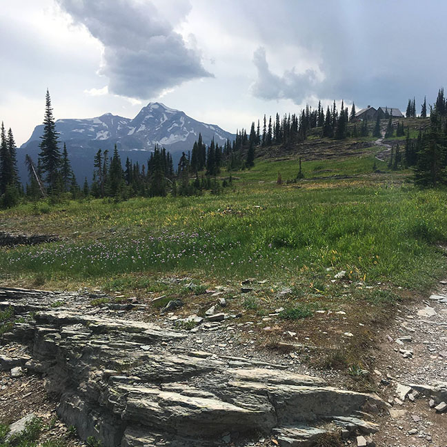

The Highline Trail been on my list of to-do hikes for years and this summer I made it happen. A 14 mile hike through the high elevation territory of Glacier National Park. From the trail, hikers can see Grinnell Glacier, one of the last glaciers in the park. Hiking is not all there is to do in Glaicer National Park. In fact, I visited the Park twice this summer. On my other visit, I kayaked the iconic McDonald Lake

Return to the home page